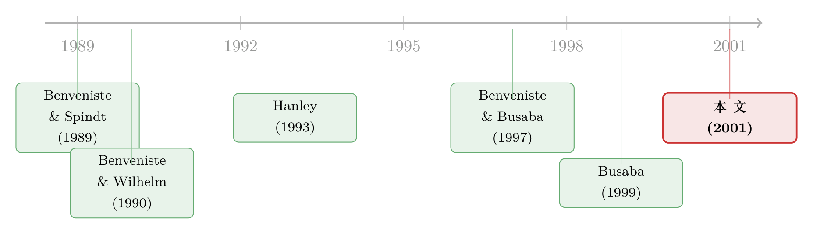

新股「打折」的另一半秘密：因为它随时可以掉头就走
本文读的是 Busaba, Benveniste & Guo (2001, Journal of Financial Economics)：美国 IPO 在簿记建档期间，发行人随时可以撤回发行；这个「掉头就走」的期权抬高了发行人对投资者的议价能力，从而降低了新股折价。实证上，当投资者事前认为一只 IPO 越可能被撤回，它真上市时的折价就越低——尤其是在需求本应很强的时候。
1 一个差点没上市的故事
先讲一个真实的场景。一家叫 Kwik Goal 的公司，老板 Vincent Caruso，一路把 IPO 准备到了上市的前一天。承销商在头天晚上找上门来，说市场反馈下来，每股只能卖到 $3，而不是招股书里写的 $6。Caruso 的回答很干脆：「我绝不可能为了 300 万美元，把公司 55% 的股份卖出去。」于是他「把投资银行家晾在了婚礼的圣坛前」——尽管他已经为这场 IPO 砸进去了二十多万美元的律师费、会计费和印刷费。（Nations Business, 1996）
这个故事里藏着一件我们平时谈 IPO 时几乎从不细想的事：当一家公司请投行带它上市，它并没有承诺「无论你最后定什么价，我都卖」。 发行人手里始终攥着一个期权——如果簿记建档（bookbuilding）跑下来的价格太低，它可以当场取消发行、转身离开。
这个看似不起眼的「撤回期权（option to withdraw）」到底值不值钱？它会不会反过来改变 IPO 的定价？这篇论文要回答的，就是这个问题。
别小看这个「随时能走」的权利。在 1984–1994 这十一年里，向 SEC 提交的产业类 IPO 中，大约有 14.3%（2,510 只里有 360 只）最终被撤回。撤回从来不是个别现象。
2 先把老问题摆上桌：新股为什么要「打折」
要理解这篇论文的新意，得先回到 IPO 研究里那个最经典的谜题：新股折价（IPO underpricing）——上市首日收盘价系统性地高于发行价，发行人等于把钱白白「留在了桌上」。
为什么会这样？最有影响力的解释来自 Benveniste and Spindt (1989) 的簿记建档模型。这套机制的核心矛盾是：投行要在定价前向机构投资者「探口风」，问他们愿意出多少；可投资者天生有动机压低自己的兴趣，好让发行价定得低一点，自己买得便宜一点。怎么让他们说真话？答案是——用折价来「贿赂」。谁如实报告了强烈的认购意愿，谁就能优先拿到被低估的配额。折价，本质上是付给投资者的一笔「说真话的奖金」，而且只在总需求强劲时才需要支付。
（关于这一支「折价是信息租金」的脉络，本博客已聊过不少，可参见《新股「打折」的真正理由，不是让你说真话，而是先让你肯掏钱》。）
接着，一个自然的问题是：既然折价是「奖金」，那发行人手里这个「撤回期权」，会不会改变这笔奖金的数目？
3 真正关键的一步：撤回期权如何「拧紧」投资者的嘴
这就是本文（以及背后的理论 Busaba, 1999）的题眼所在。
设想一个投资者，他本来打算「装作没什么兴趣」来压价。但现在情况变了：如果他真的把负面信息夸大、把口风压得太低，结果可能不是「便宜买到」，而是直接把发行人吓退、整个 IPO 被撤回——那他就丢掉了一个本来有利可图的投资机会。
于是逻辑反转出现了：
投资者越是相信发行人「敢走」，他们就越不敢压价撒谎；越不敢撒谎，发行人需要用来「赎买真话」的折价就越少。
用论文自己的话说：事前撤回概率越高，投资者从「欺骗」中能捞到的好处越少，确保他们诚实所需的折价也就越小。 因此核心假设干净利落：
对于那些投资者事前就认为更可能被撤回的 IPO，观察到的折价应当更低。
这里有一个特别精巧、也特别容易被误读的点，论文反复强调：折价并不会「导致」撤回。 折价发生在高需求状态，而撤回只可能发生在低需求状态——两者根本不在同一种世界里。撤回概率是折价的一个外生决定因素，它只影响「在能完成的发行里，剩余价值怎么在发行人和投资者之间分」。所以，哪怕投资者（以及研究者本人）在估计撤回概率时犯了错，这些错误也只会影响折价，而不会影响这只股票到底能不能上市——因此不存在自选择偏差（self-selection bias）。这一条，是后面整个两阶段实证能够成立的关键。
4 识别策略：一个两阶段的「投资者视角」
怎么检验「事前撤回概率」和「事后折价」的负相关？难点在于：撤回概率是看不见的。发行人的保留价格（reservation value）是私人信息，招股书里既不会写、就算写了也不可信（Kwik Goal 的 $6 底价，外人事前根本不知道）。
论文的做法是模仿一个理性投资者会怎么做：他没法直接观察底价，就只能用过往发行和发行公司的特征，自己建一个统计模型来推断。于是作者也建了同样的模型——
第一阶段：用一个二元 probit 模型刻画「撤回 vs. 完成」的决策。被解释变量在 IPO 被撤回时取 1、否则取 0；解释变量全部是投资者在认购决策前事前可观测的东西。这些变量被巧妙地分成两类：
- 影响发行人保留价格的因素：负债率
DEBT（有替代融资渠道 → 底价更高 → 更易撤回）、募资是否用于还债USEP（是 → 更易撤回）、二级股份占比SECONDARY（代理风险厌恶）、以及代表「专用性产品」行业的哑变量INDUSTRY（撤回成本高 → 更不愿走）。 - 影响投资者估值的因素：营收
log(REV)、资产log(AST)、盈利能力ROA（越易估值 → 越不易撤回）；发行规模与市值的代理Log(MID)、Log(SHFILED)、Log(SHTOTAL)（越大、流动性越好 → 越不易撤回）；原股东锁定后的持股比例RETAIN、风投背书VENTURE、承销商声誉RANK（Carter-Manaster 排名）、以及发行期间的市场行情RET30（NASDAQ 收益）。
用这个 probit 模型，作者为一批已完成的 IPO 反推出各自的事前撤回概率，记作 WPROB。
第二阶段：把首日折价对 WPROB 做回归，看符号和显著性。回归大致长这样：
$$ \textit{Underpricing}_i = \alpha + \beta_1\, \textit{WPROB}_i + \beta_2\, \textit{ADJUST}_i + \beta_3\, \textit{P\_ADJUST}_i + \gamma\, (\textit{WPROB}_i \times \textit{P\_ADJUST}_i) + \varepsilon_i $$
这里 ADJUST 是发行价相对招股区间中点的调整幅度，P_ADJUST 取其正值部分——它们是「需求强弱」的代理（Hanley, 1993 早已指出，价格向上调整意味着需求火爆）。WPROB × P_ADJUST 这个交互项才是点睛之笔：理论预言撤回期权的「降折价」作用在需求强劲时最明显，所以交互项的系数才是最干净的检验。
第二阶段用了第一阶段的估计值 WPROB 当回归元，这是典型的「生成回归元（generated regressor）」问题，标准误需要修正——作者引用 Murphy and Topel (1985) 的两步估计法来处理。
5 数据
- 撤回样本：1990–1992 三年间向 SEC 提交、后被撤回的 113 只美国产业类 IPO，从 SDC 的 New Issues Database 识别，再用 Disclosure Access System（SEC 文件副本）核对，财务与股权信息手工从初步招股书（S-1）里抠出来。
- 完成样本：同期 581 只完成的 IPO，其中
423只在所有变量上数据齐全。 - 统一过滤：剔除单位发行、多类别股、REITs、ADRs、封闭式基金、外国公司（F-1）、金融业（SIC 6000–6999）及法律/教育/服务类（SIC > 8100）。
- 承销商声誉来自 Carter, Dark & Singh (1998) 的更新排名；市场行情用 NASDAQ 综合指数收益（因为绝大多数 IPO 首先在那里交易）。
6 主要结果：三个让人意外的发现
发现一：撤回概率与折价显著负相关，且在强需求时最强。
WPROB 的系数显著为负。在主回归里，它约为 −0.263（t = −2.31）、−0.235（t = −2.89）等；而那个关键的交互项 WPROB × P_ADJUST 系数约为 −0.919（t ≈ −2.97）乃至 −1.052（t = −3.42）——也就是说，在需求向上调整最猛的那批发行里，撤回期权对折价的压低作用被进一步放大。这与理论的预言（折价主要发生在高需求状态、撤回期权恰好在此时最能压住投资者）严丝合缝。
顺带一提一个学术史上的小插曲：这篇论文 Table 5 在正式刊印时把 WPROB 那一格的 −0.235 误印成了 10.235、把 t 值 (−2.89) 误印成 (12.89)——一个被吞掉的减号，险些让读者把核心结论的符号读反。JFE 随后专门发了勘误。本博客对这桩「减号公案」另有一篇小文：《一个被「1」吃掉的减号，差点把整篇论文的结论说反了》。
发现二：「发行规模越大、折价越低」这个老经验，可能是个遗漏变量幻觉。
这是本文最有冲击力的一击。文献里长期报告「发行规模与折价负相关」。但本文发现：一旦把 WPROB 放进回归，规模与折价之间那个常见的负相关就消失了。换句话说，过去大家以为是「规模」在压低折价，很可能其实是「撤回概率」在背后起作用——大发行往往也是更不容易被撤回的发行。这意味着，不控制撤回概率，是 IPO 折价横截面研究里一个实实在在的遗漏变量问题。
发现三：撤回公司并不「弱」，内部人卖股也不是撤回的信号。
舆论常把撤回归因于「公司太小、太烂、市场太差」。但数据说不：撤回发行的公司，规模不比完成发行的小、盈利能力不比它们差（1989–1994 撤回组的预期发行规模均值 $32.1M、中位数 $23.7M，反而高于完成组的 $24.5M、$21.1M），聘请的承销商声誉也一样高。
更有意思的是对一则华尔街流言的检验。《华尔街日报》曾援引基金经理的话，说 IPO 里有内部人卖老股（secondary shares）是个坏信号——「管理层都觉得拿钱买房比拿自家股票更划算」，会让承销商「很难说服投资者买」。如果属实，二级股份占比 SECONDARY 就该与撤回概率正相关。然而本文找不到任何显著相关。内部人卖股，并不预示撤回。
7 文献脉络
把这条线捋一捋。故事的起点是 Benveniste and Spindt (1989)：他们把簿记建档写成一个机制设计问题，证明折价是诱导投资者如实报告信息的最优激励支付。随后 Benveniste and Wilhelm (1990) 把这套机制放到不同监管环境下比较，Benveniste and Busaba (1997) 则把它和固定价格发行对比。与此同时，Hanley (1993) 用「部分调整（partial adjustment）」现象给出实证基石：价格向上调整得越多、需求越强，折价越大——这正是本文用 ADJUST/P_ADJUST 度量需求的依据。

真正补上「撤回期权」这块拼图的是 Busaba (1999) 的理论工作，他证明了「敢走」如何提升发行人议价能力、压低折价。而本文（Busaba, Benveniste & Guo, 2001）是这条理论线的第一篇系统实证：它既建模了撤回决策本身，又把撤回概率作为折价的解释变量验证了核心命题。旁支上，Barry et al. (1990) 与 Carter and Manaster (1990) 提供了风投与承销商的「认证」假说（对应 VENTURE、RANK），Titman and Wessels (1988) 提供了「专用性资产」的撤回成本逻辑（对应 INDUSTRY），共同织成了第一阶段 probit 的解释变量网。
8 评论与延伸（Q&A + 研究方向）
(a) 几个可能的疑问
Q：第二阶段用第一阶段估出的 WPROB 当解释变量，这不是「用预测值回归」吗？标准误还可信吗？
这是「生成回归元」的经典隐患，会低估标准误。作者意识到了，引用 Murphy and Topel (1985) 的两步法做了修正。不过更深层的安全垫在于论文的经济学论证：因为折价不导致撤回、撤回只发生在低需求态，估计
WPROB的误差只进入折价、不进入「是否完成」，所以不产生选择偏差——这让两阶段在结构上比一般的样本选择问题更干净。
Q：撤回公司「不比完成公司小、不比它们差」，这难道不奇怪吗？
表面反直觉，实则正是理论的推论。撤回与否取决于保留价格相对于投资者估值的位置，而不是公司绝对质量。一家又大又好的公司，如果老板底价定得高（比如有充足的债务替代融资），照样可能掉头就走。Kwik Goal 就是例子。质量决定的是「估值」，撤回决定的是「估值够不够得着底价」。
Q：WPROB 进来之后「规模效应消失」，会不会只是多重共线性把系数搅没了？
不能完全排除，但作者的叙述是「遗漏变量」而非「共线性」：规模本身就是 probit 里降低撤回概率的因素，所以规模与折价的负相关，部分是通过「规模→低撤回概率→高折价」这条间接路径实现的。一旦显式控制撤回概率，规模的直接边际效应自然减弱。这是个机制解释，不只是统计现象。
Q：撤回期权对所有发行的作用一样大吗？
不。交互项
WPROB × P_ADJUST显著为负，说明这个期权在需求强劲（价格向上调整）时压低折价的作用最大。直觉是：只有在折价本来就该出现的高需求态，「少付一点折价」才有意义；需求疲软到根本不会有折价时，撤回期权对折价无从发力（它发力的方式是直接撤回）。
Q：内部人卖股不预示撤回，那《华尔街日报》的说法就全错了吗？
论文只证明了「
SECONDARY与撤回概率无显著相关」，没有否认内部人卖股可能通过别的渠道（比如压低估值、增大折价）传递信息。它否定的是「内部人卖股 → 更易撤回」这条特定链条。这是一个精确的、有边界的反驳，而非全盘推翻。
Q：这套结论今天（簿记建档之外还有荷兰式拍卖、直接上市、SPAC）还成立吗？
机制的前提是「发行人能可信地撤回 + 投资者的信息租金依赖于这种可信度」。在拍卖式发行里信息榨取的逻辑不同，撤回期权的作用可能改变（参见本博客《「贵」的方法，为什么把「便宜」的方法赶尽杀绝？》）。这恰恰是值得重做的方向。
(b) 几个可能的研究问题与提案
1. 撤回期权与 IPO 后的债务/信用市场。
【经济故事】论文用 DEBT、USEP 说明「有债务替代融资 → 底价更高 → 更敢撤回」。那么反过来：那些因为撤回期权而少付折价的公司，是不是事前就更系统性地安排了银行授信或债务融资，作为「敢走」的可信承诺？这把 IPO 折价和公司债/信贷市场连了起来。
【可行性】中。需要把 IPO 样本匹配到上市前的信贷安排（DealScan）与发行后的债券发行（Mergent FISD）。识别上可借「信贷可得性的外生冲击」（如银行并购、关系银行退出）作为对底价可信度的工具变量。doable，但匹配工作量大。
2. 外资参与度与撤回期权的可信度。 【经济故事】当承销商把发行卖给更多机构、尤其是跨境机构投资者时，需求信息的「榨取博弈」结构会变化，发行人撤回的威慑力也会变。外资占比高的发行，撤回概率与折价的负相关是更强还是更弱？ 【可行性】中偏低。难点是事前的投资者构成几乎不可观测，只能用上市后的 13F/跨境持仓近似，且存在反向因果。需要一个对「外资可投资度」的制度性冲击（如指数纳入、QFII 额度变化）来识别。
3. 把「撤回成本」做成准实验。
【经济故事】INDUSTRY 哑变量背后是「专用性资产 → 撤回成本高 → 不愿走 → 折价更高」。若能找到一个外生改变撤回成本的事件（如某行业供应链专用性骤升、或撤回相关的法律责任变化），就能更干净地识别「撤回成本 → 折价」这条因果链。
【可行性】中。需要一个合适的政策/技术冲击作为撤回成本的外生变动；识别策略是双重差分。诚实地说，找到「只动撤回成本、不动估值」的冲击不容易。
4. 撤回 → 再上市的动态。 【经济故事】Caruso 走了之后呢？被撤回的公司有多少会择期重返、重返时定价与折价如何变化？这能检验撤回期权的「期权」性质——它是一次性放弃，还是可反复行使的等待期权（与 IPO waves 的择时逻辑相通，见《新股的「冷热」，其实是投行在替你算的一笔账》）。 【可行性】高。SDC 能追踪撤回后的再次申报，样本可扩到更长窗口，事件研究即可上手。这是最 doable 的一个。
9 我的判断
贡献。 这篇论文的真正价值不在于「又发现一个折价的相关变量」，而在于它把一个被默认掉的制度细节——发行人随时能走的权利——抬升为折价的一阶决定因素，并给出了一个识别上相当自洽的两阶段检验。它最漂亮的一击是「规模效应消失」：用一个被遗漏的变量，解释掉了文献里一个被反复引用的横截面规律。这是好实证该有的样子——不是堆砌显著性，而是改写我们对一个旧系数的因果解读。
对识别的担忧。 我有两点保留。其一，整套结论依赖第一阶段 probit 设定正确——WPROB 是「真实投资者会建的模型」的代理，但作者用的解释变量集是否就是当年投资者心中的那一套，无从验证；设定误差会直接污染第二阶段。其二，撤回样本（113 只，1990–1992）相对小、且集中在特定时期，强需求子样本里能用于识别交互项的观测更少，−0.919/−1.052 这样的大系数需要更长样本来确认稳健。再加上那个差点把符号印反的勘误，提醒我们：结论虽稳，但margin 不算厚。
后续想看的。 我最想看到的是把「撤回可信度」做成一个可外生操纵的量——无论是通过事前债务安排（上面的提案 1），还是通过撤回成本的制度冲击（提案 3）。只有当「敢走」这件事被外生地推动，我们才能从「相关」真正走到「因果」。在今天直接上市与 SPAC 并起、簿记建档不再一统天下的市场里，重做这套检验，本身就是一个有价值的问题。
参考文献
- Barry, C., Muscarella, C., Peavy, J. III, Vetsuypens, M. (1990). The role of venture capital in the creation of public companies: evidence from the going public process. Journal of Financial Economics 27, 447–471.
- Benveniste, L., Busaba, W. (1997). Bookbuilding vs. fixed price: an analysis of competing strategies for marketing IPOs. Journal of Financial and Quantitative Analysis 32, 383–403.
- Benveniste, L., Spindt, P. (1989). How investment bankers determine the offer price and allocation of new issues. Journal of Financial Economics 24, 343–361.
- Benveniste, L., Wilhelm, W. (1990). A comparative analysis of IPO proceeds under alternative regulatory environments. Journal of Financial Economics 28, 173–207.
- Busaba, W. (1999). Bookbuilding, the option to withdraw, and the timing of IPOs. Unpublished working paper, University of Arizona.
- Busaba, W. Y., Benveniste, L. M., Guo, R.-J. (2001). The option to withdraw IPOs during the premarket: empirical analysis. Journal of Financial Economics 60(1), 73–102.
- Carter, R., Dark, F., Singh, A. (1998). Underwriter reputation, initial returns, and the long-run performance of IPO stocks. Journal of Finance 53, 285–312.
- Carter, R., Manaster, S. (1990). Initial public offerings and underwriter reputation. Journal of Finance 45, 1045–1067.
- Hanley, K. W. (1993). The underpricing of initial public offerings and the partial adjustment phenomenon. Journal of Financial Economics 34, 231–250.
- Murphy, K., Topel, R. (1985). Estimation and inference in two-step econometric models. Journal of Business and Economic Statistics 3, 370–379.
- Titman, S., Wessels, R. (1988). The determinants of capital structure choice. Journal of Finance 43, 1–20.